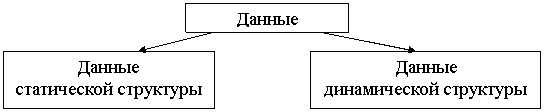
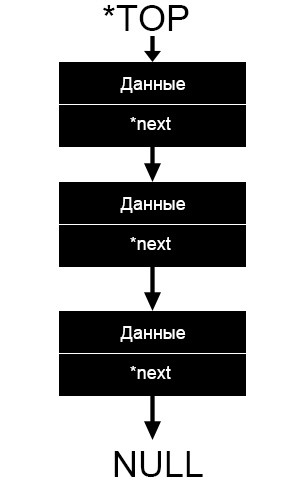

Динамические структуры данных
Объект данных обладает динамической структурой, если его размер изменяется в процессе выполнения программы или он потенциально бесконечен.
Классификация структур данных
Используемые в программировании данные можно разделить на две большие группы:

Данные статической структуры – это данные, взаиморасположение и взаимосвязи элементов которых всегда остаются постоянными.
Данные динамической структуры – это данные, внутреннее строение которых формируется по какому-либо закону, но количество элементов, их взаиморасположение и взаимосвязи могут динамически изменяться во время выполнения программы, согласно закону формирования.

Алгоритм работы стэка
Стек состоит из ячеек(в примере — это книги), которые представлены в виде структуры, содержащей какие-либо данные и указатель типа данной структуры на следующий элемент.

На данной картинке схематично изображен стек. Блок вида «Данные/*next» и есть наша ячейка. *next, как мы видим, указывает на следующий элемент, другими словами указатель *next хранит адрес следующей ячейки. Указатель *TOP указывает на вершину стек, то есть хранит её адрес.
program Ur44;
{$APPTYPE CONSOLE}
{$R *.res}
uses
System.SysUtils;
type
pr=^el; //создание типа данных стек
el=record
inform:string; // данные стэка
go:pr; // адрес верхнего элемента стэка
end;
var
top:pr; // стэк
e1,e2,e3,e4,e5:pr; //5 элементов стэка
n,i:integer;
infa,str:string;
st:string; // временная переменная длч чтения стэка в цикле
p: pr; //временный адрес для чтения стэка
begin
//
top:=nil; // адрес вершины стэка записи нет nil
//создаем первый элемент
new(e1);
e1^.inform:='Строка 1';
e1^.go:=top;
top:=e1; // новый адрес вершины стэка
writeln(e1^.inform);
//создаем второй элемент
new(e2);
e2^.inform:='Строка 2';
e2^.go:=top;
top:=e2; // новый адрес вершины стэка
writeln(e2^.inform);
//создаем третий элемент
new(e3);
e3^.inform:='Строка 3';
e3^.go:=top;
top:=e3; // новый адрес вершины стэка
writeln(e3^.inform);
//создаем четвертый элемент
new(e4);
e4^.inform:='Строка 4';
e4^.go:=top;
top:=e4; // новый адрес вершины стэка
writeln(e4^.inform);
//создаем пятый элемент
new(e5);
e5^.inform:='Строка 5';
e5^.go:=top;
top:=e5; // новый адрес вершины стэка
writeln(e5^.inform);
writeln;
//чтение стэка
p:=top; //вершина стэка куда записан последний элемент
while p<>nil do //nil будет в начале стэка
begin //p - временная вершина стэка
st:=p^.inform;
writeln(st);
p:=p^.go; //p - перезаписываем новый адрес
end;
readln;
end.